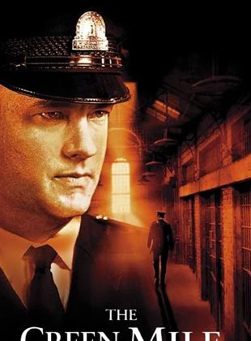

|
|
Baba, 40’lar ve 50’lerin Amerika’sında, bir İtalyan mafya ailesinin
destansı öyküsünü konu alıyor. Don Corleone’nin kızı Connie’nin düğününde,
ailenin en küçük oğlu ve bir savaş gazisi olan Michael babasıyla barışır.
Bir suikast girişimi, Don’u artık işleri yönetemeyecek duruma düşürünce,
ailenin başına Michael ve ağabeyi Sonny geçer. Danışmanları Tom Hagen’in
de yardımlarıyla diğer ailelere savaş açan Corleone ailesi, eski moda
yöntemleri de değiştirmeye başlar.
|
|
 |
|
Yeşil Yol, bir hapishane görevlisi ile bir mahkumun öyküsünü anlatıyor.
Paul Edgecomb'un hapishanedeki görevi, idama mahkum edilen mahkumları son
yolculuklarına uğurlamaktır. Çalıştığı yıllar içerisinde yüzlerce mahkumu
idam etmiştir. Bir gün John Coffey isimli korkutucu görünümlü bir adamla
tanışır. Ancak Coffey'in bu ürkütücü görünümünün altında oldukça saf bir
ruh yatmaktadır. Coffey, iki küçük kız çocuğunun katil davasında
yargılanmaktadır. Coffey'in günden güne gün yüzüne çıkan dünya ötesi
güçleri, karakteri hakkında yeni ipuçlarını anbean ortaya çıkaracaktır.
|
|
 |
|
Yüzüklerin Efendisi: Kralın Dönüşü, Tek Yüzük'ün yok edilmesi için verilen
mücadeleyi konu ediyor. Sauron'un orduları büyüdükçe büyümektedirler.
Frodo ve onun can dostu Sam, korku dolu bir yolculuğun göbeğinde, korkunç
Mordor'a adım adım yaklaşmaktadırlar. Tek yüzük yok edilmelidir ve iyilik
bunun için savaşmaya hazırdır. Arka planda ise insan, elf ve cüce
orduları, karanlık güçlerin karşısında tüm eski düşmanlıklarına rağmen bir
araya gelmişlerdir. Hepsi birden küçücük bir Hobbit'in eline ve onun
yeteneklerine bakmaktadırlar. Orta Dünya'nın kaderi belli olmak üzeredir.
Ancak Tek Yüzük'ü sahiplenmek, kimi zaman taşıyanına daha cazip gelebilir.
|